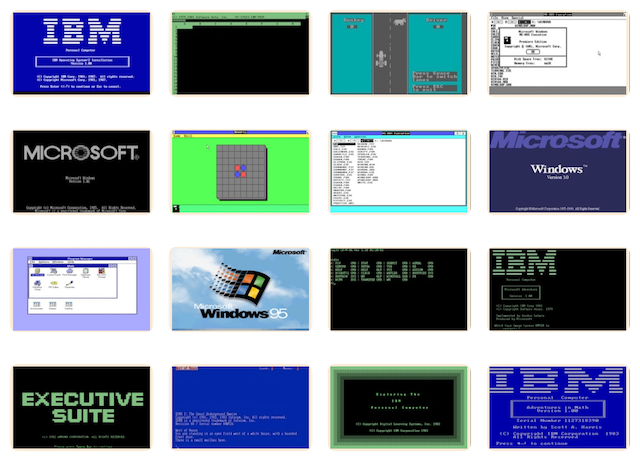

Home of the original IBM PC emulator for browsers.
A machine with QuickBASIC 3.00 (Disk 1) loaded in drive A: is provided below, along with Directory Listings of the original 360Kb diskettes.
[PCjs Machine "ibm5170-msdos320"]
Waiting for machine "ibm5170-msdos320" to load....
Volume in drive A has no label
Directory of A:\
ABSOLUTE ASM 647 2-06-87 3:47p
BUG BAS 397 2-17-86 3:34p
CALLSHAP BAS 133 4-25-86 10:00a
DEMO BAS 211 6-10-86 9:47a
EX BAS 182 4-25-86 10:01a
INT86 ASM 17900 3-11-87 11:37p
LINK EXE 47017 3-02-87 1:11p
MODE43 COM 195 3-22-87 12:36a
PPRINT BAS 23149 12-01-86 1:57p
QB EXE 188843 4-07-87 10:59a
README DOC 28311 3-31-87 1:01p
REMLINE BAS 12913 6-19-86 7:12a
SQUARE BAS 164 12-04-86 12:11p
TRIANGLE BAS 250 4-25-86 10:03a
UPDATE DOC 7657 3-10-87 3:55p
15 file(s) 327969 bytes
25600 bytes free
Volume in drive A has no label
Directory of A:\
ABSOLUTE OBJ 75 3-04-87 1:06p
BCOM30 LIB 179712 4-07-87 10:51a
BRUN30 EXE 70680 4-07-87 10:48a
BRUN30 LIB 5120 3-04-87 1:07p
BUILDLIB EXE 44257 3-02-87 1:12p
GWCOM OBJ 3000 3-04-87 1:05p
INT86 OBJ 520 3-12-87 1:54a
PREFIX ASM 1311 1-13-87 12:42p
PREFIX OBJ 472 3-12-87 2:29a
SMALLERR OBJ 243 3-04-87 1:05p
10 file(s) 305390 bytes
51200 bytes free
Volume in drive A has no label
Directory of A:\
ABSOLUTE OBJ 75 3-04-87 1:06p
BCOM3087 LIB 174080 4-07-87 10:54a
BRUN3087 EXE 76112 4-07-87 10:52a
BRUN3087 LIB 5120 3-04-87 3:02p
BUILDLIB EXE 44257 3-02-87 1:12p
EMULATOR OBJ 12571 3-19-87 1:16p
GWCOM87 OBJ 2985 3-04-87 1:05p
INT8687 OBJ 518 3-12-87 1:55a
PREFIX87 ASM 2189 3-11-87 11:42p
PREFIX87 OBJ 636 3-12-87 2:29a
SMALLERR OBJ 243 3-04-87 1:05p
11 file(s) 318786 bytes
37888 bytes free
Volume in drive A has no label
Directory of A:\
ABSOLUTE ASM 647 2-06-87 3:47p
BUG BAS 397 2-17-86 3:34p
CALLSHAP BAS 133 4-25-86 10:00a
DEMO BAS 211 6-10-86 9:47a
EX BAS 182 4-25-86 10:01a
INT8687 ASM 16043 3-12-87 1:36a
LINK EXE 47017 3-02-87 1:11p
MODE43 COM 195 3-22-87 12:36a
PPRINT BAS 23149 12-01-86 1:57p
QB87 EXE 185499 4-07-87 11:00a
README DOC 28311 3-31-87 1:01p
REMLINE BAS 12913 6-19-86 7:12a
SQUARE BAS 164 12-04-86 12:11p
TRIANGLE BAS 250 4-25-86 10:03a
UPDATE DOC 7657 3-10-87 3:55p
15 file(s) 322768 bytes
30720 bytes free
"README.DOC" File
Release Notes for the MICROSOFT(R) QuickBASIC Compiler
Version 3.0 for IBM(R) Personal Computers
and Compatibles
(C) Copyright Microsoft Corporation, 1987
THIS FILE CONTAINS IMPORTANT INFORMATION CONCERNING VERSION 3.0 OF
THE MICROSOFT(R) QUICKBASIC COMPILER. PLEASE READ THE ENTIRE FILE
VERY CAREFULLY BEFORE USING YOUR QUICKBASIC PRODUCT.
This file is divided into three parts, as follows:
PART CONTENTS
1 Information about additions and changes to QuickBASIC
made after the manual was printed.
2 Additions and corrections to the QuickBASIC Compiler
Version 3.0 update document.
3 Additions and corrections to the QuickBASIC Compiler
Version 2.0 manual.
For information on corrections to the software from Version 2.0 to 3.0,
please refer to the UPDATE.DOC file on this disk.
===<Part 1: Additional Information>=========================================
1. Executing Command Buttons
In QuickBASIC 2, pressing ENTER always executed the command button
with the double outline (the default command), regardless of which
button was highlighted. To execute the command in the highlighted
button, you had to press SPACEBAR.
In QuickBASIC 2.01 and 3, this is no longer the case: pressing either
ENTER or SPACEBAR executes the highlighted button.
2. The QB.INI Initialization File
QB.INI is an initialization file that QuickBASIC uses to set both the
Options settings in the View menu and the Autosave command settings
in the File menu. Upon exiting QuickBASIC, if you have modified
any of the Options settings or the state of the File menu's Autosave
command, these changes are written to QB.INI. Note that QB.INI is
not supplied on any of the product disks. It is created only when
you change the Options or Autosave settings. If you use only the
default settings, QB.INI is never created.
When QB.INI is created, it is placed in the current directory. When
QuickBASIC starts, it looks for QB.INI in the current directory, then
in the locations specified by the PATH environment variable.
3. Source-File Line Termination
QuickBASIC requires a CR-LF (carriage return-line feed) sequence at the
end of each line. If only carriage returns are present, QuickBASIC reads
the first 255 characters only, and continues without producing an error
message. If only line feeds are present, QuickBASIC appears to read the
file correctly, but will in fact overlook the last character of each line.
If you use an editor that places only a CR or an LF at the end of a line,
you need to modify your source files so they have the correct sequence at
the end of each line. The following program examines the end of each line
in a BASIC source file and inserts a carriage return, line feed, or both, if
needed (the original contents are saved in a file with the extension ".BAK").
' Be sure to compile this program with the "On Error" (/e) and
' "Resume Next" (/x) options to turn on error trapping
DEFINT A-Z
CONST FALSE = 0, TRUE = NOT FALSE
CarReturn$ = CHR$(13)
LineFeed$ = CHR$(10)
DO
CLS
INPUT "File (.BAS): ", InpFile$
Extension = INSTR(InpFile$,".")
IF Extension > 0 THEN
InpFile$ = LEFT$(InpFile$,Extension-1)
END IF
ON ERROR GOTO Handler
NAME InpFile$ + ".BAS" AS InpFile$ + ".BAK"
OPEN InpFile$ + ".BAK" FOR INPUT AS #1
ON ERROR GOTO 0
OPEN InpFile$ + ".BAS" FOR OUTPUT AS #2
PrevCarReturn = False
DO UNTIL EOF(1)
FileChar$ = INPUT$(1, #1)
IF FileChar$ = CarReturn$ THEN
IF PrevCarReturn THEN FileChar$ = LineFeed$ + FileChar$
PrevCarReturn = True
ELSEIF FileChar$ = LineFeed$ THEN
IF NOT PrevCarReturn THEN FileChar$ = CarReturn$ + FileChar$
PrevCarReturn = False
ELSEIF PrevCarReturn THEN
PrevCarReturn = False
FileChar$ = LineFeed$ + FileChar$
END IF
PRINT #2, FileChar$;
LOOP
CLOSE
PRINT "Another file (Y/N)?"
More$ = INPUT$(1)
LOOP WHILE More$ = "y" OR More$ = "Y"
SYSTEM
Handler:
ErrNumber = ERR
IF ErrNumber = 53 THEN
CLS
PRINT "No such file. Enter new name."
INPUT "File (.BAS): ", InpFile$
RESUME
ELSEIF ErrNumber = 58 THEN
KILL InpFile$ + ".BAK"
RESUME
ELSE
ON ERROR GOTO 0
ERROR ErrNumber
END IF
4. Using CALL ABSOLUTE with In-Memory Compilation
ABSOLUTE is considered an external subroutine by the QuickBASIC compiler.
The assembly-language source for this subroutine is in the file
ABSOLUTE.ASM, which can be found on either of the disks labeled Disk 1 in
the QuickBASIC distribution package. ABSOLUTE.OBJ, an assembled version of
this subroutine suitable for inclusion in a user library with the BUILDLIB
utility, can be found on either of the disks labeled Disk 2 in the QuickBASIC
distribution package.
5. Compilation Errors
When an error is detected during compilation, code generation stops. This
allows for faster compilation, but has the side effect that some errors may
be reported that are not errors. When the original error is corrected,
these side-effect errors go away. For example, the statements
FOR I = 1
.
.
.
NEXT I
generate two errors, "Missing TO" and "NEXT without FOR". When
the FOR statement is changed to read "FOR I = 1 to 10", both errors
are corrected.
6. COMMAND.COM, the SHELL Statement and the Free Menu's Shell Command
QuickBASIC requires COMMAND.COM before it can execute either a SHELL
statement or the Shell command from the File menu. QuickBASIC looks
for COMMAND.COM first in the directory specified in the COMSPEC
environment variable, then in the current directory.
7. Using the SHELL Statement in a Subroutine
The SHELL statement does not compress memory. If not enough contiguous
memory is available, (for example, if many CHAIN statements have been
executed, or several dynamic arrays were allocated then erased), a SHELL
statement may fail with an "Out of memory" error message.
8. Using the SHELL Statement with DOS 2.X
If you are using a 2.X version of DOS, programs that contain SHELL
statements may not exit correctly. This is due to a known problem in DOS
2.X. The problem occurs when DOS reloads the transient portion of the
command processor into high memory.
To exit QuickBASIC after executing an in-memory program that contains
SHELL statements, when the program finishes running, choose Shell from the
File menu, then type "exit" at the DOS prompt.
When standalone executable programs exit, the message "Invalid COMMAND.COM"
may appear. If so, you must restart your system. If you compile using
BRUN30.EXE, in most cases the program exits properly.
Another solution is to upgrade your DOS version to 3.X.
9. Running Terminate-and-Stay-Resident Programs from the File Menu's
Shell Command
Do not run terminate-and-stay-resident programs while executing the Shell
command from the File menu. When a Shell command is executed, QuickBASIC
is compressed into the smallest memory possible. The terminate-and-stay-
resident program occupies memory required by QuickBASIC, making it
impossible to compile or run a program, or do anything that allocates
memory.
10. Changing Directories from the File Menu's Shell Command
If you change directories after executing the Shell command from the File
menu, this directory is the current directory when you return to QuickBASIC.
Subsequent Load commands use this as the default directory, and when you
quit QuickBASIC, you will be in this directory.
11. Using BRUN30.EXE with User Libraries
The run-time module BRUN30.EXE obtains the user library using the name
the program module was compiled with. All independently compiled program
modules to be linked together must be compiled with the same user library
using the same name; othewise, an error occurs at run time.
You cannot use BCOM30.LIB, the alternate run-time library, with user
libraries.
12. Using /l with Nonreferenced Libraries
User libraries specified with the /l option are pulled into the
executable file regardless of whether the program requires them.
13. The User-Library Search Path
If path information is provided with the qb command's /l option, as in
qb progname /l \src\lib\mylib.exe
no path search is performed. If the library is not in the specified location
an error occurs. If no path information is provided, the current directory
is searched, then the directory specified in the LIB environment variable.
14. Graphics-Mode Statements
A color-graphics adapter is required if you are using any of the following
statements:
CIRCLE PMAP
COLOR (screen modes 1-10) POINT
DRAW PRESET
GET (graphics) PSET
LINE PUT (graphics)
PAINT SCREEN (screen modes 1-10)
PALETTE VIEW
PCOPY WINDOW
15. EGA-Card Restrictions
The EGA card does not support the COLOR statement's border parameter. Using
the border parameter causes unpredictable results.
16. Program Capacity
Because the Debug option generates extra code, extremely large programs
that are compiled with the Debug option may exceed the memory limits of
your computer.
17. Object-File Size
Programs compiled with the Debug option (the default) create larger
object files than programs compiled without the Debug option.
18. Using the PEN Function When a Mouse Driver Is Present
The mouse driver intercepts the PEN function's BIOS calls and redirects
them to the mouse. If you don't want to use the mouse as a lightpen, call
mouse function 14 to disable the mouse's lightpen-emulation flag, which is
on by default. Mouse function 13 turns lightpen emulation back on. For
example, the following code turns mouse lightpen emulation off:
CALL MOUSE(14,0,0,0)
See your mouse manual for more information.
19. Editing Responses to the INPUT Statement
The input editor supplied with QuickBASIC is a line editor only. This
means you can move and edit only horizontally. Attempts to use the
UP, DOWN, PGUP and PGDN cursor keys produce a beep.
20. Disk-Error Messages
Whenever you get a disk-error message, such as "Write protect violation",
DO NOT change to a different disk before selecting "RETRY". If you want
to retry with a different disk, select the "Cancel" button, replace the
disk, and compile again.
===<Part 2: Corrections to the QuickBASIC Compiler Version 3.0 Update>=======
Page Correction
---- ----------
Update-25 The first sentence under "Viewing User-Library Source Code"
should be changed to read as follows:
QuickBASIC's debugger also lets you see the text of any BASIC
source file used to build the user library, provided the
source file was compiled with either the /d command-line option
or the Debug option in the Compile... dialog box. If a source
in the user library was compiled without these options, the
debugger displays the following message if you try to view the
file with the F6 command:
***** No Debug Information *****
Update-44 The following information on emulating the function of an
8087/80287 math coprocessor should be added to Section 4.2:
Programs using either the standard BRUN3087.LIB library
or the alternate BCOM3087.LIB library automatically use an
8087/80287 coprocessor at run time if one is installed.
However, you can override the use of the coprocessor and force
an application to emulate its function by setting the NO87
environment variable.
HOW TO SET THE NO87 ENVIRONMENT VARIABLE
----------------------------------------
EXAMPLES
--------
SET NO87=Use of coprocessor suppressed
SET NO87=<one or more spaces>
Both of the preceding examples force software emulation of
the 8087/80287 coprocessor, provided the application is
using BRUN3087.LIB or BCOM3087.LIB linked with EMULATOR.OBJ
(see the "COPROCESSOR/EMULATION USAGE TABLE" below for
more information on when NO87 forces emulation). The first
setting causes the message
Use of coprocessor suppressed
to appear on the screen when a program that uses an 8087
or 80287 is executed, and an 8087 or 80287 is present.
The second setting does not display a message.
To turn off forced emulation, set NO87 equal to a null, or
empty, value.
EXAMPLE
-------
SET NO87=
The preceding example turns off software emulation of
the 8087/80287. Note: no spaces follow the "equal" (=)
sign.
COPROCESSOR/EMULATION USAGE TABLE
---------------------------------
The following table shows the effects of setting the NO87
variable on applications using QB87:
+----------------------+-----------------------+
| Math Coprocessor | Math Coprocessor not |
| Present and NO87 Set | Present |
+--------------------+----------------------+-----------------------+
| | | |
| Application | Emulates | Emulates |
| using BRUN3087.EXE | coprocessor | coprocessor |
| | | |
+--------------------+----------------------+-----------------------+
| Application | | |
| compiled with /o, | Emulates | Emulates |
| and linked with | coprocessor | coprocessor |
| EMULATOR.OBJ | | |
+--------------------+----------------------+-----------------------+
| Application | | |
| compiled with /o, | Uses | Does not run |
| but not linked | coprocessor | |
| with EMULATOR.OBJ | | |
+--------------------+----------------------+-----------------------+
NOTES ON TABLE:
1) The entries under the "Math Coprocessor not Present"
heading are valid regardless of whether or not the
NO87 variable is set.
2) If an 8087/80287 coprocessor is present and either one
of the following conditions is true, the application
always uses the coprocessor:
a) The NO87 variable is not set.
b) Forced emulation has been turned off by setting
NO87 equal to a null value.
Update-45 The text under the "Effect" heading for CLS 1 should
be changed to read as follows:
...Previously, CLS 1 changed the screen only
after a VIEW statement was executed.
Also, add the following to the text for CLS 2:
See the reference entry for VIEW PRINT in the
Microsoft QuickBASIC Compiler manual for more
information on creating a text window.
===<Part 3: Corrections to the QuickBASIC Compiler Version 2.0 Manual>=======
Page Correction
---- ----------
61-63 Significant enhancements have been made to QuickBASIC's debugging
capabilities. See the discussion in Section 3, "Debugging Commands,"
of the "Microsoft QuickBASIC Compiler Version 3.0 Update," which
supersedes the discussion on pages 61-63 of the Version 2.0 manual.
71 In the syntax line at the bottom of the page, the "c:buffersize"
option should be preceded by a forward slash, as follows:
/c:buffersize
76 In the first paragraph after Figure 4.2, the sentence "If you
are in a subdirectory..." should state that the entry ".."
appears in the "upper-left corner", not the "upper-right".
78 Binary files cannot be loaded into QuickBASIC. The note in the
middle of the page should read:
QuickBASIC accepts only ASCII files. If you attempt to load a
binary file, you will get an error.
78 BASICA ASCII files containing explicit extended ASCII characters,
(graphics characters), are treated as binary files by QuickBASIC.
93 In Section 4.4.3.11, "Exe," it should be noted that the executable
files created using this method require the support of the BRUN30.EXE
run-time module in order to execute.
120 The first line of this example (DEFINT I-L) should be changed
to DEFINT I-S so as to execute correctly.
152 The stack is preset to 768 bytes, not 512.
160 The list of nonexecutable statements should also include the
CONST statement.
161 In the example under Section 9.2.2, there should not be an underscore
character (_) following the FIELD variable D$.
162 String constants can be ASCII characters in the range 32 to 126.
(127 is the DEL character)
172 In the discussion of "Overflow" and "Division by zero" errors, the
following paragraph should be added to item 1a:
If you are running a program from the QuickBASIC
user interface (editor) with the Debug option on,
and one of these errors occurs, the program ends
and the appropriate error message appears in the
dialog box at the bottom of the screen. You are
then returned to the editor, with the cursor
positioned on the line where the error occurred.
The following should also be added to item 2:
If you are running a program from the QuickBASIC
interface with the Debug option off, the program
still ends with the appropriate error message
displayed; however, when you are returned to the
editor, the cursor is positioned on the first line
of the program, rather than the offending line.
183 In Table 10.1, you should add the statements PEEK, POKE, and DEF SEG
to the column "May Require Modifying Interpreter Programs," since
the memory maps of the interpreter and the compiler are different.
For example, programs that read from or write to memory locations in
the RAM-resident portion of the interpreter do not work in the
compiler environment since the interpreter is not present.
188 In Section 10.3.2, the $INCLUDE metacommand, restriction 2) is in
error. Included files may contain END statements.
193 In Table 10.6, you should add the statements PEEK, POKE, and
DEF SEG, since the memory maps of the interpreter and the compiler
are different. For example, programs that read from or write to memory
locations in the RAM-resident portion of the interpreter do not work in
the compiler environment since the interpreter is not present.
200 In the Action section for the BLOAD command, it states that
BLOAD can take input from "any input device." This is not true,
as the BLOAD command does not take input from the "KYBD:" device.
222 The EGA card does not support the COLOR statement's border parameter.
If you have an EGA card installed on your system, using the border
parameter causes unpredictable results.
229 The list of nonexecutable statements should also include the
CONST and DATA statements.
232 The "VO1" variable in the third line from the bottom should be changed
to read as follows:
DENS=W/VOL
235 The last line in the example should be "LOCATE Y,X" not
"LOCATE X,Y".
265 The syntax for the ERASE statement should have a comma between
the array names, as shown here:
ERASE arrayname [,arrayname...]
275 In the FIELD statement's Example 2, the order of arguments is reversed
for all string-manipulation functions. The affected section of the
program should read as follows:
.
.
.
IF (ZCHECK$ > "85699" AND ZCHECK$ < "85801") THEN
INFO$ = PLIST$
PRINT LEFT$(INFO$,25)
PRINT MID$(INFO$,16,25)
PRINT RIGHT$(INFO$,17)
END IF
The FIELD statements in the two examples shown under Example 4 should
be changed to read as follows:
FIELD #1, RECLENGTH% AS OFFSET$, SIZE% AS A$(I%)
and
FIELD #1, 15 AS A$(1), 10 AS A$(2),..., 8 AS A$(14)
280 Change the first sentence at the top of the page to read as
follows:
The body of a FOR...NEXT loop is executed at least
once, unless one of the following conditions is true,
in which case the loop is not executed:
* Step size is positive, and <start> is greater
than <end>.
* Step size is negative, and <start> is less than
<end>.
283 In the FRE function example, the first line of the example should be
a $DYNAMIC metacommand, as follows:
' $DYNAMIC
PRINT "Before dimensioning arrays: " FRE(""),FRE(0),FRE(-1)
.
.
.
286 There is a missing parenthesis in the formula for computing the GET
graphics statement's array size. There should be three left parentheses
after the INT keyword, as follows:
4 + INT(((x2 - x1 +1) * bits-per-pixel + 7)/8) * ((y2 - y1) +1)
297 The two examples comparing the single-line and block forms of the
IF...THEN...ELSE statement should read as follows:
Example 1:
INPUT "Price = ",x
IF (x >= 10000) THEN DISC! = x * .25! ELSE _
IF (x < 10000) AND (x >= 5000) THEN DISC! = x * .2! ELSE _
IF (x < 5000) AND (x >= 1000) THEN DISC! = x * .1! ELSE _
DISC! = 0
IF DISC! = 0 THEN PRINT "No discount" ELSE _
PRINT "Discounted price = "; : PRINT USING "$$####.##";x - DISC!
Example 2:
INPUT "Price = ",x
IF (x >= 10000) THEN
DISC! = x * .25!
ELSEIF (x < 10000) AND (x >= 5000) THEN
DISC! = x * .2!
ELSEIF (x < 5000) AND (x >= 1000) THEN
DISC! = x * .1!
ELSE DISC! = 0
END IF
IF DISC! = 0 THEN
PRINT "No discount"
ELSE
PRINT "Discounted price = ";
PRINT USING "$$####.##";x - DISC!
END IF
313 The last sentence of the description of Example 2, after
the semicolon, should read: "The last line displays the new
soft-key values."
314 Since QB3 supports the Advanced 101-Key keyboard, the
function keys F11 and F12 can now be trapped. Trapping
of F11 can be controlled with KEY(30) {ON | OFF | STOP},
while trapping of F12 can be controlled with
KEY(31) {ON | OFF | STOP}.
315 The table listed on this page is incomplete. In addition to
the values listed, you must also take into account the state
of the NUM LOCK and CAPS LOCK keys. For NUM LOCK active you
should add the value &H20, and for CAPS LOCK active you should
add the value &H40 to the keyboard flag.
317 The second comment in the example program should read:
' DOWN key will now be trapped
Also, note this program traps only the CTRL-s (lowercase s) key
sequence. To trap CTRL-S (with a capital S), you need to deal with
capital letters produced by holding down the SHIFT key, as well as
capital letters produced when the CAPS-LOCK key is active, as shown
here:
KEY 16, CHR$(&H05) + CHR$(&H1F) ' Trap CTRL + SHIFT + s
KEY 17, CHR$(&H44) + CHR$(&H1F) ' Trap CTRL + CAPS-LOCK + s
KEY (16) ON
KEY (17) ON
ON KEY (16) GOSUB KEYTRAP
ON KEY (17) GOSUB KEYTRAP
325 The STEP option example requires a hyphen before the STEP keyword, as
follows:
LINE -STEP (10,5)
The phrase following the example should read:
"draws a line from (10,10) to the point with x-coordinate
10+10 and y-coordinate 10+5, or (20,15)."
327 The Action for LINE INPUT should read:
Inputs an entire line (up to 255 characters) to a string variable...
338 The Remark for LOF should read:
When a file is opened in any mode, LOF returns the size of the file in
bytes.
348 In the description of the example it should be noted that line 100
converts the single-precision variable AMT to a 4-byte string;
therefore, the field variable D$ needs to be defined as only a
4-byte string:
FIELD #1, 4 AS D$, 20 AS N$
353 Delete the last sentence on this page.
369 Add the following note concerning the ACCESS clause:
The ACCESS clause works in an OPEN statement only if you are using
versions of DOS that support networking (3.0 or later). In addition,
you must run the SHARE.EXE program (or the network startup program must
run it) to perform any locking operation. Earlier versions of DOS
return an "Advanced Feature" error if ACCESS is used with OPEN.
375 The second sentence under the Action heading for the LF option should be
changed to read:
When LF is specified, a line-feed character (0AH) is automatically sent
after each carriage-return character (0DH).
388 The last sentence in the REMARKS section should be deleted. The
argument to the PEEK statement should be a single-precision
variable in the range 0-1,048,575.
396 The variable in the first line of PLAY statement's Example 1 should be
SCALE$, not SCALES$:
SCALE$ = "CDEFGAB"
410 In the example, all references to the file STORINVENT should be changed
to INVENT.DAT. The file argument to both OPEN statements should be
the same file, INVENT.DAT.
418 The first entry in the "Arguments" column should be (x,y), not
(x1,y1).
420 Images cannot be scaled with the PUT graphics statement. Only one set
of x,y coordinates can be specified as arguments to PUT. All text
after "Because you can specify..." in the second paragraph, and all of
the following paragraph, should be ignored.
424 The second sentence in the Remarks section for the READ statement should
be changed to read as follows:
READ statements assign DATA-statement values to variables on a
one-to-one basis.
448 The text format for SCREEN 1 should be 40 X 25, and the text format
for SCREEN 2 should be 80 X 25.
The first line under the SCREEN 2 heading should be corrected to
read as follows:
* 640 x 200 pixel high-resolution graphics
452 The color range listed for SCREEN 2 should be 0 - 15, not 0 - 1.
Because the WIDTH statement in QuickBASIC 3 now lets you set the
number of lines displayed on the screen as well as the number of
columns, the information on legal video-page ranges in SCREEN 0
shown in Table 11.6 should be updated as follows:
WIDTH Statement Display/Adapter Legal Video-Page
Format Hardware Ranges
----------------------------------------------------------------
WIDTH 80,25 MDPA 0 only
CGA 0 - 3
EGA (64K) 0 - 3
EGA (128K - 256K) 0 - 7
WIDTH 40,25 CGA, EGA 0 - 7
----------------------------------------------------------------
WIDTH 80,43 EGA (64K) 0 - 1
EGA (128K - 256K) 0 - 3
WIDTH 40,43 EGA (64K) 0 - 3
EGA (128K - 256K) 0 - 7
----------------------------------------------------------------
NOTE: 43-line mode is valid only with an EGA adapter with its
switch set for an EGA display.
474 The example for the STR$ function should read as follows:
DEF FNNum$(X)
X$ = STR$(X)
LENGTH = LEN(X$)
IF LEFT$(X$,1) <> "-" THEN LENGTH = LENGTH - 1
FNNum$ = RIGHT$(X$,LENGTH)
END DEF
PRINT "Enter 0 to end."
DO
INPUT "Find cosine of: ",Num
IF Num THEN PRINT "COS(" FNNum$(Num) ") = " COS(Num)
LOOP WHILE Num <> 0
482 In the example, the input to the prompt "Pattern to be searched
for?" must be SUB (not "sub") in order to get the output shown.
525 Add CASE, CONST, DEBUG, DO, ELSEIF, LOOP, OFF, RANDOM, and SELECT
to the list of reserved words.
Delete the dollar-sign ($) character at the end of GOTO.
535 Batch files created for versions of QuickBASIC before 2.0 require
modification. In older batch files, "bascom" should be "qb".
536 If you are using a version of DOS earlier than 3.0, use the PATH command
instead of the SET command to define the PATH variable. Using SET under
earlier versions of DOS can cause the PATH variable to work incorrectly
for some path specifications containing lowercase letters.
546 & The stack is preset to 768 bytes, not 512.
547
566 The third bulleted remark ("A USR function...") should be deleted.
570 The explanation for the error message "Too many files" should read:
This error most commonly occurs when an attempt is made to open a
number of files that exceeds the limit set by the FILES= parameter in
the CONFIG.SYS file. It also occurs when the per-directory file limit
is exceeded by an attempt to create a new file with the SAVE or OPEN
statement. Refer to your DOS manual for the number of files permitted
in a directory.